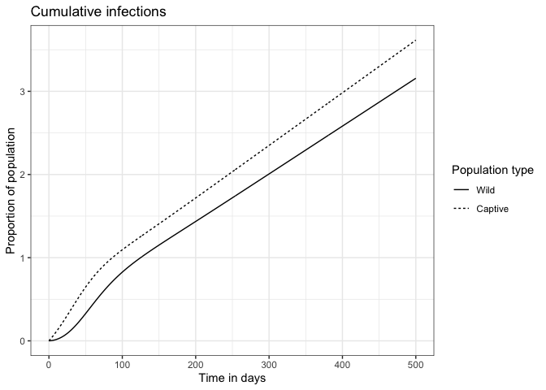

Authors
Elias Rosenblatt (erosenbl@uvm.edu), Rubenstein School of Environment and Natural Resources, 81 Carrigan Drive, Burlington, VT, USA
F. Javiera Rudolph, Department of Ecosystem Sciences and Management, Pennsylvania State University, University Park, PA, USA; U.S. Geological Survey, Eastern Ecological Science Center, Laurel, MD, USA
Fernando Arce, Department of Environmental Conservation, University of Massachusetts, Amherst, MA, USA
Jonathan D. Cook, U.S. Geological Survey, Eastern Ecological Science Center, Laurel, MD, USA
Graziella V. DiRenzo, U. S. Geological Survey, Massachusetts Cooperative Fish and Wildlife Research Unit, University of Massachusetts, Amherst, MA, USA; Department of Environmental Conservation, University of Massachusetts, Amherst, MA, USA
Evan H.C. Grant, U.S. Geological Survey, Eastern Ecological Science Center, Turner’s Falls, Massachusetts, USA
Michael C. Runge, U.S. Geological Survey, Eastern Ecological Science Center, Laurel, MD, USA
Brittany A. Mosher, Rubenstein School of Environment and Natural Resources, 81 Carrigan Drive, Burlington, VT, USA
Information
Repository Type: Program R scripts
Year of Origin: 2023
Year of Version: 2023
Version: 1.0.0
Digital Object Identifier (DOI): ______
USGS Information Product Data System (IPDS) no.: IP-_______
Suggested Citation for Software
Rosenblatt, E, Rudolph, J.F., and Arce, F., Cook, J. D., DiRenzo, G.V., Grant, E.H.C., Runge, M.C., and Mosher, B.A.. whitetailedSIRS: A package to project SARS-CoV-2 outbreak dynamics in white-tailed deer. Version 1.0.0: U.S. Geological Survey software release, https://doi.org/______/______
Abstract
This software release contains several R scripts that generate epidemic projections of SARS-CoV-2 in white tailed deer populations using a Susceptible-Infected-Recovered-Susceptible (SIRS) modeling framework. We provide a workflow of vignettes used in Rosenblatt et al. In Prep and Cook et al. In Prep. Users are able to specify transmission parameters for human-deer and deer-deer transmission to quantify changes in outbreak dynamics. The outputs of this package are ggplot friendly, and for the most part, we use a list-column workflow when working with multiple simulations. Details on the model can be found in the vignettes.
Acknowledgements
We thank Daniel Walsh, Susan Shriner, and Kim Pepin for their continued feedback as part of a broader decision analysis detailed in Cook et al. In Prep and Rosenblatt et al. In Prep. This work was supported by the Coronavirus Aid, Relief, and Economic Security Act (P.L. 116-136).
Installation
You can install the development version of whitetailedSIRS from GitHub with:
# install.packages("devtools")
devtools::install_github("disease-decision-analysis-and-research/whitetailedSIRS")Vignettes
Vignette 1: sir_model_description.Rmd
Data inputs: N/A
Details: A introductory vignette detailing the SIRS ODE equations and corresponding functions, used in Rosenblatt et al. In prep and Cook et al. In Prep.
Outputs: N/A
Vignette 2: example_values.Rmd
Data inputs: N/A
Details: A vignette stepping through the suggested work-flow when using the whitetailedSIRS package. Other vignettes use the same work-flow, so this vignette is useful for new users to understand how to replicate or modify the analysis presented.
Outputs: N/A
Vignette 3: SIRS_analysis_by_context.Rmd
Data inputs: N/A
Details: This vignette details the analysis used to study differences in outbreak dynamics in four scenarios of SARS-CoV-2 transmission to and among white-tailed deer populations. The output of this vignette is used to visualize differences in the vignette whitetailedSIRS::Visualize_by_context. This analysis corresponds with Objectives 1-3 of Rosenblatt et al. In Prep.
Outputs: N/A
Vignette 4: SIRS_analysis_by_context_initialspill.Rmd
Data inputs: N/A
Details: This vignette follows the same blueprint as whitetailedSIRS::SIRS_analysis_by_context. The primary difference here is that initial infected compartment sizes are set non-zero values and human prevalence is set to zero. This mimics an initial spillover event of a given magnitude, to test how outbreak dynamics differ from continuous spillover detailed in whitetailedSIRS::SIRS_analysis_by_context. These differences are visualized in the vignette whitetailedSIRS::Visualize_by_context. Most of the simulation code is suppresed in the rendered vignette, but can be viewed in the .Rmd file. This analysis corresponds with Objective 4 of Rosenblatt et al. In Prep.
Outputs: N/A
Vignette 5: Visualize_by_context.Rmd
Data inputs: data/scenario_results.rda; data/scenario_projections.rda
Details: This vignette demonstrates how to visualize the differences in various characteristics of outbreaks between scenarios. These figures are used in the results published in Rosenblatt et al. In Prep..
Outputs: N/A
Vignette 6: Connected_Systems.Rmd
Data inputs: data/scenario_results.rda
Details: This vignette tests how connected systems (wild and captive separated by a fence line) differ in outbreak characteristics, compared to isolated scenario. When these scenarios are connected, there may be differences in prevalence, cumulative cases, and persistence due to fence line interactions. This analysis corresponds with Objective 5 of Rosenblatt et al. In Prep.
Outputs: N/A
Vignette 7: Management_Alternatives_Systems.Rmd
Data inputs: N/A
Details: This vignette runs outbreak simulations to estimate the effects of various management alternatives on the dynamics of a SARS-CoV-2 outbreak in wild and captive white-tailed deer. We considered captive:wild systems that are separated by a fence. These management alternatives may be implemented in both wild and captive populations, or in one scenario. We focus on 11 alternatives, ranging across agriculture, public health, and wildlife sectors. These alternatives are detailed in Cook et al. In Prep..
Outputs: N/A
Functions
Function 1: draw_elicitation_samples.R
Data inputs: elicitation_data.rda
Details: R function that samples a user-specified number of values from expert-elicited parameter estimates used in Rosenblatt et al. In Prep and Cook et al. In Prep.
Outputs: A data frame listing expert-elicited parameters, error distribution characteristics (mean, standard deviation, and family) and user-specified number of random samples from the error distribution.
Function 2: get_EE_param_vals.R
Data inputs: Output object from elicitation_data.rda
Details: R function that prepare random draws from elicitation_data.rda for inputs in the SIRS ODE equations.
Outputs: A vector object containing drawn values for an expert-elicited parameter, with a length specified by the user.
Function 3: calc_contact_rate.R
Data inputs: N/A
Details: R function that uses proximity rate model developed by Habib et al. (2011) to estimate proximity rates for deer in wild or wild-like captive settings, conditional on density and habitat availability. This function can also be used for captive settings with conditions that result in identical deer-deer proximity rates.
Outputs: A vector object containing drawn deer-deer proximity rate values (proximity events per day), with a length specified by the user.
Function 4: calc_sigma_aero.R
Data inputs: N/A
Details: R function that calculates probability of infection from aerosol transmission of SARS-CoV-2. User can specify number of probabilities generated for this derived parameter, an specific parameters influencing these probabilities (e.g. duration of proximity, dose-response, etc.).
Outputs: A vector object containing drawn infection probabilities for aerosol transmission, with a length specified by the user.
Function 5: calc_sigma_dc.R
Data inputs: N/A
Details: R function that calculates probability of infection from fluid transmission of SARS-CoV-2. User can specify number of probabilities generated for this derived parameter, an specific parameters influencing these probabilities (e.g. duration of proximity, dose-response, etc.).
Outputs: A vector object containing drawn infection probabilities for fluid transmission, with a length specified by the user.
Function 6: initial_compartments.R
Data inputs: N/A
Details: R function that populates a list of initial Susceptible (S) - Infected (I) - Recovered (R) compartment sizes. The function has an argument to format the output to allow the calculation of the size of each compartment at equilibrium (steady = TRUE), or to format the output to allow the calculation of cumulative infections over the course of a projected outbreak (steady = FALSE). These two process cannot be done in the same execution of the function, but rather be run separately. The length of each vector object in the list is determined by the user. The formatted output is ready to be fed into the run.R function, which uses Epi_sirs.R and Epi_sirs_with_cumulative.R functions to project how these compartment sizes change through a projection.
Outputs: A list object containing vector objects containing the starting size of each SIR compartment. If steady = FALSE, the list includes 2 additional vectors “I_wild_cumulative” and “I_captive_cumulative”. This list object is prepared to be fed into the run.R function.
Function 7: alternative.R
Data inputs: N/A
Details: R function that helps to prepare parameters used to solve SIRS ODE equations for both wild and captive deer, to be fed into the params argument of the run.R function. 15 parameters must be defined with lengths equal to the number of simulations run. This function takes these parameter inputs and calculates derived transmission rate parameters for use with the ODE equations.
Outputs: A list of vector objects containing estimates for derived parameters, for use with the run.R function.
Function 8: run.R
Data inputs: N/A
Details: R function that Run ODE Solver for SIRS model, using parameter estimates (output from alternatives.R), initial compartment sizes for projection (output from initial_compartments.R with argument steady = FALSE) and initial compartment sizes formatted for steady state calculation (output from initial_compartments.R with argument steady = TRUE).
Outputs: A list containing a run identifier (run_id), initial compartment sizes for projection (inits.fall), initial compartment sizes for steady state calculation (inits.steady), parameter values used for each run (params), compartment sizes for each time step in reach run (ode_proj), compartment sizes at steady-state equilibrium (steady_state), and the scenario label for each run_id (Context). This output is used for all visualization and table summaries. For results from Rosenblatt et al. In Prep, this output is stored in the package in scenario_results.rda.
Function 9: simple_sirs.R
Data inputs: Outputs from alternatives.R and initial_compartments.R.
Details: R function that defines the ODE SIR equations to work alongside the deSolve::ode() function, and it will return an object with the proportion of individuals found in each of the SIR compartments at each of the specified time points. This function is used in this package to calculate persistence, or the steady state equilibrium (via rootSolve::run_steady()), along with how compartment sizes change through a projection.
Outputs: N/A
Function 10: simple_sirs_with_cumulative.R
Data inputs: Outputs from alternatives.R and initial_compartments.R.
Details: Similar to whitetailedSIRS::simple_sirs, this R function defines the ODE SIR equations to work alongside the deSolve::ode() function, and it will return an object with the proportion of individuals found in each of the SIR compartments at each of the specified time points. An added feature is that this function has ODE equations to calculate the cumulative infections from day 0 to day t.
Outputs: N/A
Example
Below is a basic example to run a simple projection using basic functions and fake data. Functions in whitetailedSIRS allow more complex calculations, but the core concepts remain the same.
library(whitetailedSIRS)
## basic example code
example_inits <- c(S_wild = 1,
I_wild = 0,
R_wild = 0,
I_wild_cumulative = 0,
S_captive = 1,
I_captive = 0,
R_captive = 0,
I_captive_cumulative = 0)
example_inits_steady <- c(S_wild = 1,
I_wild = 0,
R_wild = 0,
S_captive = 1,
I_captive = 0,
R_captive = 0)
# length of time to run this for
example_times <- seq(0, 500, by = 1)
# The parameters we are using in the simulation
example_params <- c(alpha_immunity = 0.03,
beta_aero_ww = 0.01,
beta_aero_cw = 0.01,
beta_aero_cc = 0.02,
beta_aero_hw = 0.01,
beta_aero_hc = 0.2,
beta_dc_ww = 0.01,
beta_dc_cw = 0.01,
beta_dc_cc = 0.01,
phi_cw = 0,
phi_wc = 0,
gamma_recov = 0.01,
I_human = 0.05,
boost = 0)
library(deSolve)
library(rootSolve)
example_out <- ode(y = example_inits, times = example_times, parms = example_params, func = whitetailedSIRS::simple_sirs_with_cumulative)
example_eq <- runsteady(y = example_inits_steady, parms = example_params, func = whitetailedSIRS::simple_sirs)
library(tidyverse)
example_out %>%
as_tibble() %>%
select(., -I_wild_cumulative, -I_captive_cumulative) %>%
pivot_longer(-time, names_to = "compartment", values_to = "proportion") %>%
separate(compartment, sep = "_", c("sir_type", "pop_type")) %>%
mutate(sir_type = factor(sir_type, levels = c("S", "I", "R")),
pop_type = factor(pop_type, levels = c("wild", "captive"))) %>%
ggplot(aes(x = time, y = proportion, color = sir_type, linetype = pop_type)) +
geom_line() +
labs(title = "SIR dynamics", y = "Proportion of population", x = "Time in days",
color = "SIR", linetype = "Population type") +
theme_bw()
example_out %>%
as_tibble() %>%
select(., -S_wild, -I_wild, -R_wild, -S_captive, -I_captive, -R_captive) %>%
rename(., Wild = I_wild_cumulative, Captive = I_captive_cumulative) %>%
pivot_longer(-time, names_to = "population", values_to = "cumulative_proportion") %>%
mutate(population = factor(population, levels = c("Wild", "Captive"))) %>%
ggplot(aes(x = time, y = cumulative_proportion, linetype = population)) +
geom_line() +
labs(title = "Cumulative infections", y = "Proportion of population", x = "Time in days",
linetype = "Population type") +
theme_bw()
example_eq$y %>%
as_tibble_row() %>%
pivot_longer(cols = everything(), names_to = "compartment", values_to = "proportion") %>%
separate(compartment, sep = "_", c("sir_type", "pop_type")) %>%
mutate(sir_type = factor(sir_type, levels = c("S", "I", "R")),
pop_type = factor(pop_type, levels = c("wild", "captive"))) %>%
ggplot(aes(x = sir_type,
alpha = pop_type,
y = proportion, fill = sir_type)) +
geom_col(position = "dodge") +
labs(title = "Equilibrium proportions", x = "Compartment", alpha = "Population type", fill = "SIR") +
scale_alpha_discrete(range = c(1, 0.4)) +
ylim(0, 1) +
theme_bw()
References
Cook, J.D., E. Rosenblatt, G.V. Direnzo, E.H.C. Grant, B.A. Mosher, F. Arce, S. Christensen, R. Ghai, M.C. Runge. In Prep. Using decision science to evaluate the risk and management of SARS-CoV-2 zoonotic transmission between humans and white-tailed deer.
Rosenblatt, E., J.D. Cook, G.V. Direnzo, E.H.C. Grant, F. Arce, K. Pepin, F.J. Rudolph, M.C. Runge, S. Shriner, D. Walsh, B.A. Mosher. In Prep. Epidemiological modeling of SARS-CoV-2 in white-tailed deer (Odocoileus virginianus) reveals conditions for introduction and widespread transmission.